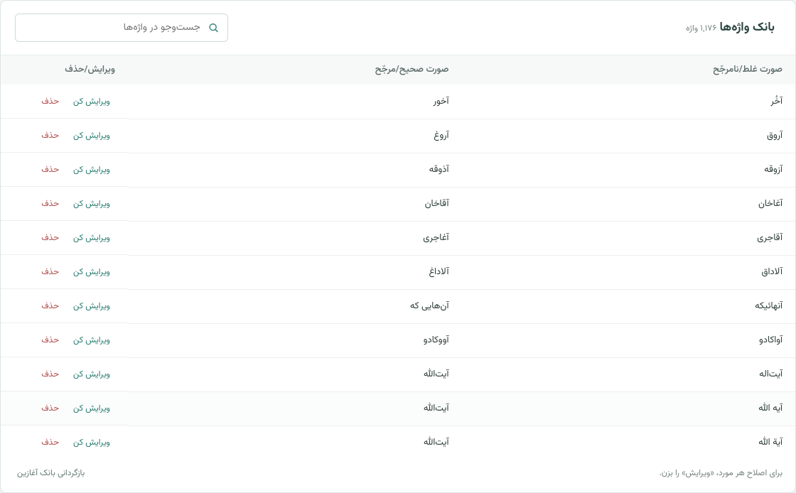
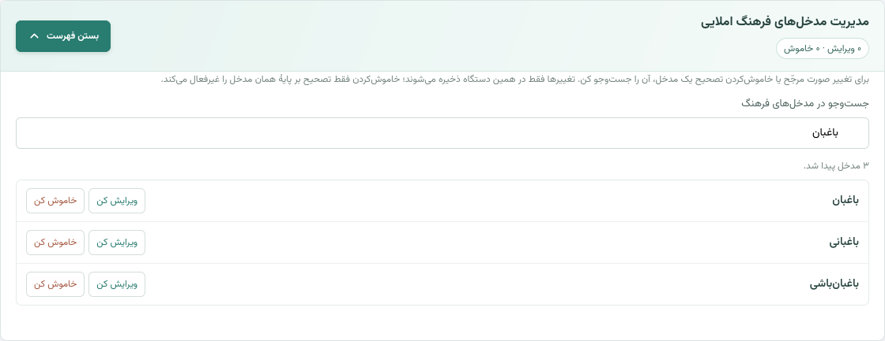
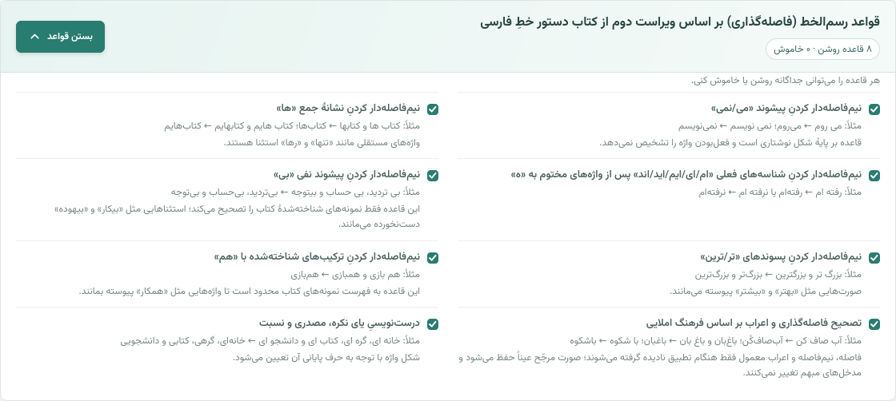

برای نمونه، اگر «انظباط» را بهعنوان صورت نامرجّح و «انضباط» را بهعنوان صورت مرجّح در بانک داشته باشی، هنگام تایپ در فایرفاکس با زدن فاصله، نشانهای مثل نقطه یا ویرگول، یا کلید Enter تصحیح انجام میشود. برای این کار لازم نیست متن را به برنامه یا ابزار دیگری منتقل کنی.
بانک واژههای شخصی
بانک شخصی با ۱۱۷۶ جفتواژه آغاز میشود: در هر جفت، یک صورت غلط یا نامرجّح به صورت صحیح یا مرجّح تبدیل میشود؛ مثلاً «انظباط» به «انضباط». میتوانی واژههای تازه اضافه کنی، واژههای بانک را جستوجو کنی و هر جفت را ویرایش یا حذف کنی. وقتی در کادر افزودن شروع به تایپ میکنی، واژههای همآغازِ بانک پیشفرض پیشنهاد میشوند تا اگر واژهای از قبل در بانک هست، آن را دوباره اضافه نکنی. برای نگهداری یا انتقال واژههای بانک، از آن پشتیبان JSON بگیر و بعداً همان فایل را وارد کن.

تطبیق با کتاب فرهنگ املایی خط فارسی و مدیریت مدخلها
علاوه بر بانک شخصی، دستورخط ۳۰٬۸۶۷ مدخلِ کتاب فرهنگ املایی خط فارسی را برای تصحیح فاصلهگذاری و اعراب در نظر میگیرد. هنگام تطبیق، فاصله، نیمفاصله و اعراب معمول نادیده گرفته میشوند؛ سپس صورت مرجّح ثبتشده در کتاب جایگزین میشود. این تطبیق دقیق است و بر پایهٔ شباهت تقریبی حدس نمیزند. اگر یک صورت نوشتاری از مدخلهای کتاب فرهنگ املایی خط فارسی به بیش از یک صورت مرجّح برسد، مبهم به شمار میآید و تصحیح نمیشود.
در بخش «مدیریت مدخلهای فرهنگ املایی» میتوانی یک مدخل را جستوجو کنی، صورت مرجّحش را مطابق نیازت ویرایش کنی یا تصحیح همان مدخل را خاموش کنی. این تغییرها فقط روی دستگاه خودت نگهداری میشوند و تنظیمات مدخلهای دیگر را تغییر نمیدهند.

هشت قاعدهٔ رسمالخط
برای اصلاح قاعدههایی که افزودن تکتک شکلها به بانک را لازم نمیکنند، هشت قاعدهٔ مستقل در تنظیمات وجود دارد. میتوانی هرکدام را روشن یا خاموش کنی:
- پیشوند «می/نمی»: «می روم» به «میروم» و «نمی نویسم» به «نمینویسم» تبدیل میشود.
- نشانهٔ جمع «ها» و صورتهای ضمیری آن: «کتاب ها»، «کتابها»، «کتاب هایم» و «کتابهایم» به صورتهای نیمفاصلهدار تصحیح میشوند.
- شناسههای فعلی پس از واژههای مختوم به «ه»: «رفته ام» و «نرفته ام» به «رفتهام» و «نرفتهام» تبدیل میشوند.
- پیشوند نفی «بی»: صورتهای شناختهشدهای مثل «بی تردید» و «بیتوجه» به «بیتردید» و «بیتوجه» تبدیل میشوند.
- پسوندهای «تر/ترین»: «بزرگ تر» و «بزرگترین» به «بزرگتر» و «بزرگترین» تبدیل میشوند؛ صورتهایی مثل «بهتر» و «بیشتر» پیوسته میمانند.
- ترکیبهای شناختهشده با «هم»: «هم بازی» و «همبازی» به «همبازی» تبدیل میشوند.
- یای نکره، مصدری و نسبت: «خانه ای» به «خانهای» و «دانشجو ای» به «دانشجویی» تبدیل میشود.
- تصحیح شکلهای فاصلهگذاری بر پایهٔ کتاب فرهنگ املایی خط فارسی: این قاعده شکلهای فاصلهگذاریشده یا پیوسته را با صورت مرجّحِ ثبتشده در کتاب تطبیق میدهد؛ مثلاً «با شکوه» به «باشکوه»، «بر عکس» به «برعکس»، «همزمان» به «همزمان» و «علی رغم» به «علیرغم» تصحیح میشوند. اینها نمونههایی از مدخلهای واقعیاند. هنگام تطبیق، فاصله، نیمفاصله و اعراب معمول نادیده گرفته میشوند؛ اگر یک صورت نوشتاری با چند مدخل مرجّح جور دربیاید، افزونه آن را مبهم میداند و تغییرش نمیدهد.
بعضی قواعد فقط نمونههای شناختهشده را اصلاح میکنند تا شکلهای درست بهاشتباه تغییر نکنند؛ مثلاً «همکار» پیوسته میماند. کارت قواعد جمعشونده است و وضعیت باز یا بستهبودنش برای استفادهٔ بعدی به خاطر سپرده میشود.

فارسی، محلی و قابلپشتیبانگیری
رابط تنظیمات فارسی و راستبهچپ است. بانک واژهها و تنظیمات در فضای ذخیرهسازی محلی فایرفاکس روی دستگاه خودت نگهداری میشوند و متنهایی که مینویسی برای تصحیح به سروری فرستاده نمیشوند. برای انتقال یا نگهداری نسخهٔ پشتیبان، از فایل JSON استفاده کن.